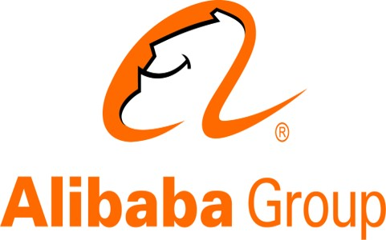
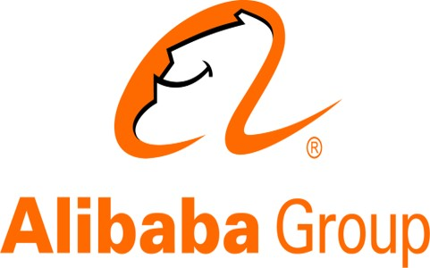

Research (Selected Topics)
Weakly Supervised Representation Learning
Modern machine learning is migrating to the era of complex models (e.g., deep neural networks), which emphasizes the data representation highly. This learning paradigm is known as representation learning. It is noted that representation learning normally requires a plethora of well-annotated data. Nonetheless, for startups or non-profit organizations, such data is barely acquirable due to the cost of labeling data or the intrinsic scarcity in the given domain. These practical issues motivate us to research and pay attention to weakly supervised representation learning (WSRL), since WSRL does not require such a huge amount of annotated data. Over the years, we have developed techniques for weakly supervised representation learning, such as label-noise representation learning and wildly transferable representation learning.-
Relevant Work/Publications:
machine learning with noisy labels (Monograph, accepted and under preparation)
label-noise representation learning (Survey)
training deep networks via memorization effects (NeurIPS'18, ICML'19, ICLR'21, NeurIPS'21, TMLR'22, ICLR'22)
estimating the noise transition matrix (NeurIPS'18, NeurIPS'19, NeurIPS'20, ICML'21, ICML'22)
stochastic integrated gradient underweighted ascent (ICML'20)
instance-dependent label-noise learning (NeurIPS'20, ICML'21, AAAI'21, NeurIPS'21, CVPR'22, CLeaR'22)
instance-dependent positive-unlabeled learning (TPAMI'21, ICLR'22)
class-wise denoising for robust learning under label noise (TPAMI'22)
learning with complementary and partial labels (ICML'20, NeurIPS'20, ICLR'22)
learning with open-set labels (NeurIPS'21, TPAMI'22)
learning with weakly supervised labels (IJCAI'20, ICML'21, ICML'21, AAAI'21)
variational imitation learning with diverse-quality demonstrations (ICML'20)
contrastive learning with boosted memorization (ICML'22)
Security, Privacy and Robustness in Machine Learning
In this research thrust, I am interested in the following question: How can we preserve the security, privacy and robustness in training complex models? We have investigated learning algorithms for handling large-scale sensitive data safely. One of the key ideas is to bridge private updates of the primal variable with gradual curriculum learning. We have proposed one of the pioneer approaches for investigating the robustness of residual networks from the perspective of dynamic system. Specifically, we exploited the step factor in the Euler method to control the robustness of ResNet in both its training and generalization. More recently, we derived a series of adversarial learning algorithms, which mainly focus on empirical defense.-
Relevant Work/Publications:
privacy-preserving stochastic gradual learning (TKDE'19)
towards robust ResNet: a small step but a giant leap (IJCAI'19)
friendly adversarial training (ICML'20)
geometry-aware instance-reweighted adversarial training (ICLR'21, NeurIPS'21)
understanding adversarial attacks via maximum mean discrepancy (ICML'21)
learning diverse-structured networks for adversarial robustness (ICML'21)
improving adversarial robustness via invariant features and mutual information (ICML'21, ICML'22)
understanding the interaction of adversarial training with noisy labels (arXiv'21, TMLR'22)
adversarial robustness through the lens of causality (ICLR'22)
reliable adversarial distillation with unreliable teachers (ICLR'22)
fast and reliable evaluation of adversarial robustness (ICML'22)
modeling adversarial noise for adversarial training (ICML'22)
bilateral dependency optimization for privacy preservation (KDD'22)
Automated, Federated and Graph Machine Learning
Motivated by the success of automated machine learning (AutoML), we are exploring to leverage the power of AutoML for addressing the domain problems in trustworthy learning, such as searching the small-loss percentage under noisy labels or robust network structures under adversarial examples. In high level, we have formulated the synertistic interaction between trustworthy learning and automated learning as a bi-level programming. Specifically, we designed a domain-specific search space based on domain knowledge in trustworthy learning. Meanwhile, we proposed a novel Newton algorithm to solve the bi-level optimization problem efficiently. Motivated by the success of federated learning (FL), we are exploring to leverage the power of FL for addressing the data privacy and governance issues, meanwhile maintains the model robustness to noisy labels and adversarial attacks. Besides, in industrial-level FL environments, we are the first to study the collaboration between the device and the cloud, namely the device-cloud collaborative learning (DCCL) framework. More recently, we are working on trustworthy graph neural networks and knowledge graphs.-
Relevant Work/Publications:
searching to exploit memorization effect in learning from noisy labels (ICML'20)
device-cloud collaborative learning for recommendation (KDD'21)
virtual homogeneity learning for federated heterogeneity (ICML'22)
understanding and improving graph injection attack by promoting unnoticeability (ICLR'22)
device-cloud collaborative recommendation via meta controller (KDD'22)
efficient two-stage evolutionary architecture search (ECCV'22)
Interdisciplinary Problems: Healthcare Analytics and Drug Discovery
Unlabeled data and data with noisy labels are commonly encountered in medical image analysis. To tackle these two intractable problems, this proposed project will use machine learning (ML) technologies to develop robust, efficient and automated diagnosis algorithms, which can be applied to identify diverse diseases. We will verify our proposed methods on a series of public datasets, such as MICCAI BraTS, MICCAI iSeg2019, ChestX-ray14 and ISBI CHAOS. The aim of this project is to reduce the demands of annotated medical data, decrease the costs of manual screening, and prompt the development of smart healthcare. We hope that our designed model can provide reasonable medical interpretation for doctors, helping them better understand the functioning mechanism of intelligent medical diagnosis. More recently, we are working on the synergy between machine learning and drug discovery.-
Relevant Projects/Publications:
robust representation learning for computer-aided diagnosis (Project'20)
known-region-aware domain alignment for open world semantic segmentation (arXiv'21)
towards reliable, robust and invariant deep graph learning with application to drug discovery (Project'22)
invariance principle meets out-of-distribution generalization on graphs (arXiv'22)
Sponsors
- TMLR group is/was funded from Research Grants Council (RGC) of Hong Kong, National Natural Science Foundation of China (NSFC), Hong Kong Baptist University (HKBU), RIKEN Center for Advanced Intelligence Project, HKBU Computer Science Department, HKBU Interdisciplinary Research Labs, and Industrial Research Labs.
 
